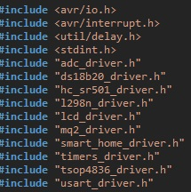
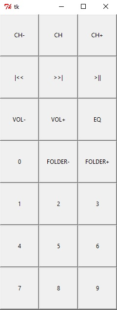

Small steps => a bigger project
Before any introduction I want to tell you 5 things about me:
- My name is Andrei
- I am 20 years old
- I love programming
- I like both cats and dogs (maybe animals in general)
- This page was made only for fun so don't judge me :)
Short introduction to my project
This project represents a simulation of a Smart House system. It is made using an Atmega32 uC on an EvB 5.1 Kit, some sensors and a little embedded C, Python and HTML scripting. The house uses sensors to do some actions in background when some events are taking place and it can perform some user actions.
The sensors that I have used are:
- DS18B20 - temperature sensor
- MQ-2 - gas sensor
- HC-SR501 - proximity sensor
- TSOP4836 - IR receiver
Other equipment:
- LCD display
- L298N driver and DC motor
- green LED for the light
- IR remote control
- Buzzer
Project main utilities
The house has 2 states. The house is locked by default and it askes for a password PIN to unlock. In background it has some security checks for the temperature and gas leaks. The proximity sensor is activated only in locked state. If any gas leak or high temperature is detected, the fan starts and a message is displayed on the LCD and the buzzer starts.
After unlock there are a few menus to manually control the house: temperature display, AC control menu and light menu.
Implementation
I have started by coding in C the main drivers for the sensors and peripherals.
After I have finished the drivers, I have started the final project This was the time to find if all the work was not wasted.
It took about a week to finish the main projects and it looked ok. But that was not all...
Taking the project to the next level
Because I ran out of ideas, I said why not implement the remote control inside an application. So, I did it.
So, now the house could be controlled with the remote control and with the application with USART protocol sending and recieving data to/from the board.
And, of course, this was not enough...And because of that, I had the idea to implement a website to show the live temperature of the house and, why not, present my project to you using this site :)